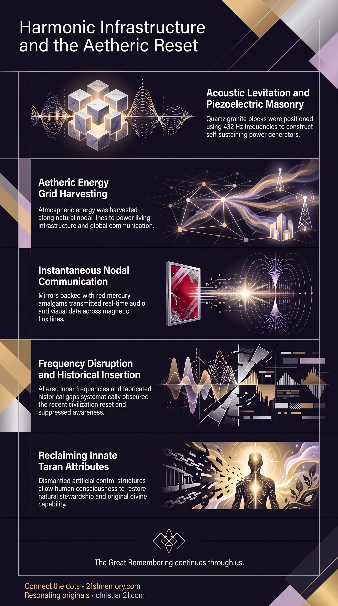

Tartaria: Hidden History
Tartaria: Hidden History — The suppressed record of the last high global civilization and the resets that buried it.
Tartarian Memory is the suppressed record of the physical plane's last high global civilization, which ran on aetheric energy and harmonic architecture before artificial resets erased it.
Test your understanding of Tartarian Memory — the suppressed record of the last high global civilization and the resets that buried its aetheric architecture.

Tartaria: Hidden History — The suppressed record of the last high global civilization and the resets that buried it.

How Sound Built Tartaria's Energy Grid — Sound masonry, piezoelectric granite, and aetheric current along the nodal grid.

Time-Phase Mirrors of Tartaria — Red mercury TPC mirrors that carried instantaneous visual and auditory transmission.
The memory of Tartaria represents the suppressed historical reality of the physical plane's last high global civilization, an advanced, unified human society that operated on organic, spiritual technology, harmonic architecture, and clean aetheric energy before its systematic destruction in a series of artificial resets. Tartarian civilization spanned all continents, utilizing the natural geodesic nodal grid of the plane to power living infrastructure, transmit instantaneous communication, and foster global coherence under a single spoken language. The physical remnants of this civilization—ranging from self-warming stone edifices to grand cathedral-style energy collectors—were systematically re-framed, rebranded, or physically demolished through orchestrated wars, energy weapons, and fabricated historical timelines designed to induce global spiritual amnesia. Reclaiming Tartarian Memory is an essential pillar of the Great Spiritual Awakening, as it dismantles the foundational lies of perceived knowledge, false history, and artificial scarcity that maintain the current control field.
The mainstream historical record is an artificial construct engineered to conceal Tartaria's recent existence. Between 1840 and 1850, over 18,745 "rare" medieval manuscripts were systematically injected into European libraries and private collections to fabricate a 1,000-year historical gap known as the "Dark Ages" or Middle Ages. Architectural dates previously marked with "J" or "I" (representing Jesus or Immanuel, such as J882 or I762) were re-interpreted as the years 1882 or 1762, effectively adding a millennium to the calendar to obscure the recency of the last major reset. Mainstream claims that the 1.12-square-mile walled City of London housed 200,000 residents in 1616 within two-story wooden and wattle-and-daub structures are structurally impossible. Achieving such population density required 12-to-15-story structures comparable to modern Manhattan. The standing architecture of the London Square Mile consists of massive Tartarian Ashlar masonry buildings that were constructed centuries prior using sound levitation and aetheric principles. Tartarian cities functioned as giant organic circuit boards where stone buildings harvested aetheric energy and directed it along ley line channels like water between riverbanks. Following the reset, the parasitic control apparatus repurposed these empty architectural shells into financial Banks, transforming the natural flow of aetheric current into monetary currency. Pre-reset Africa and the Iberian Peninsula were populated by the Moorish Metropolis, an advanced African Tartarian civilization operating anti-gravity levitation craft and harvesting free energy through stunning geometric palaces like the Alhambra. Following their defeat in 1887, the Moorish population was systematically reset, stripped of technology, and re-framed through sanitized schoolbook history.
Tartarian architecture was grown and assembled through sound masonry utilizing piezoelectric quartz granite. Blocks weighing between 0.25 and 4 tons were dressed and positioned using specific Solfeggio scales and 432 Hz harmonic frequencies rather than hammers, chisels, or physical iron tools. In major structures, 3-to-4-ton foundational blocks were anchored 40 feet deep into the local water table, completing an Air-to-Earth aetheric circuit that allowed the building to function as a self-sustaining power generator.
The interior environments of Tartarian structures functioned as a living fabric that provided automated climate control and food preservation without external fuels or mechanical appliances. Historical correspondence from the early 20th century documents stone rooms that naturally warmed themselves during harsh winters without fireplaces, wall-embedded spouts that discharged instant hot water continuously without boilers or visible piping, and unadorned stone wall recesses that maintained cool temperatures and prevented dairy and bread from perishing.
Global communication across Tartaria relied on Time-Phase Conjugated (TPC) Mirrors backed by an amalgam containing red mercury derived from cinnabar ore. These mirrors interacted aetherically across magnetic flux lines and nodal alignments to deliver real-time visual and auditory transmission. Following the 1728 reset, the Custodians modified the lunar frequencies emitted by the Moon (an artificial spherical base shielded by a holographic projection). This frequency shift caused TPC mirrors worldwide to feedback and malfunction, sparking the historic Mirror Madness epidemics that forced thousands of users into asylums.
Prior to the post-reset intervention described in the Babel narrative, the entire plane communicated through a single, unified spoken frequency known as the Lemurian Tongue. This universal language facilitated seamless global trade, shared spiritual understanding, and unhindered technological collaboration. To disrupt human unity and prevent collective resistance, the control structure deliberately fractured the Lemurian Tongue into over 7,170 distinct languages, effectively isolating populations and establishing artificial cultural barriers. Tartarian written script was subsequently scrubbed from all public books, remaining visible only in raised relief castings on ancient ceremonial bells.
The Amazon Basin is not an unmanaged natural jungle, but rather a supermassive pre-Tartarian engineered garden spanning 2.7 million square miles. Over 90% of the basin floor is covered by Terra Preta (Black Earth), an artificially cultivated living soil up to two meters deep containing biochar, animal bones, and over 140 trillion crushed terracotta pot shards acting as microbial reefs. This self-regenerating soil matrix supported 417 million Brazil nut trees—a canopy giant that requires a highly improbable three-way symbiotic loop between orchid bees, wild orchids, and agouti rodents—and fully domesticated food crops like the peach palm.
Tartarian Memory connects directly to the broader mechanics of reset harvest sequences. When Tartarian civilization achieved high spiritual and technological coherence, the parasitic managers deployed energy weapons, artificial floods, mini-ice ages, and directed energy fires (such as the "World Fairs" burnings) to liquidate the adult population and bury ground-level architecture under mud layers. Following each reset, the surplus children taken into underground DUMB bases were cloned using stem cell extraction, subjected to fear-based conditioning, and re-introduced to the surface via Orphan Trains around 1900. These repopulated populations were provided with a blank-slate history, Rockefeller-funded schooling, and primitive industrial technology to hide their true Taran heritage. The physical edifices of Tartaria were built directly over the primary intersections of the Becker-Hagens UVG 120 Grid. Following the destruction of the high-vibrational crystalline healing temples, the control structure erected heavy stone churches, cathedrals, prisons, and airports over those exact GPS coordinates to suppress positive planetary frequencies and broadcast entropic 440 Hz electromagnetic noise.
True spiritual awakening requires cutting the three primary control strings: Perceived Knowledge, Religion, and Finance. Recognizing the truth of Tartarian Memory strips away reliance on institutional academic authority, proving that human origin is not evolutionary or primitive, but high-density and divine. The erasure of Tartaria was designed to keep the human vessel trapped in a perpetual loop of reincarnation and Loosh harvesting. Understanding that human DNA retains the 15 innate Taran attributes—including abstract thinking, metacognition, and symbolic communication—enables individuals to bypass artificial mental cages and reconnect with their oversoul in the Arc Pods. As artificial electromagnetic simulation fields drop during the final phases of the Great Spiritual Awakening, the physical overlays concealing Tartarian structures and atmospheric energy networks will dissolve. Restoring Tartarian Memory equips incarnated souls to recognize their true soul family, navigate the transition without trauma, and resume harmonic steward function over the physical plane.
This topic is free to share. Support the archive →